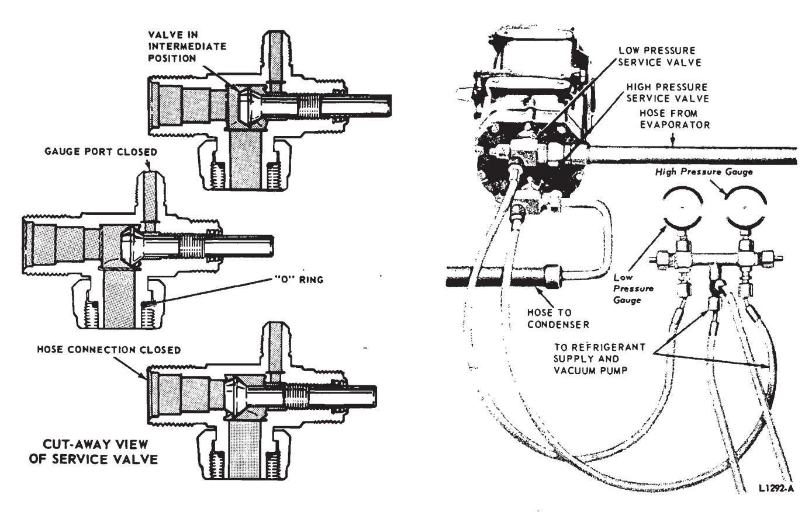
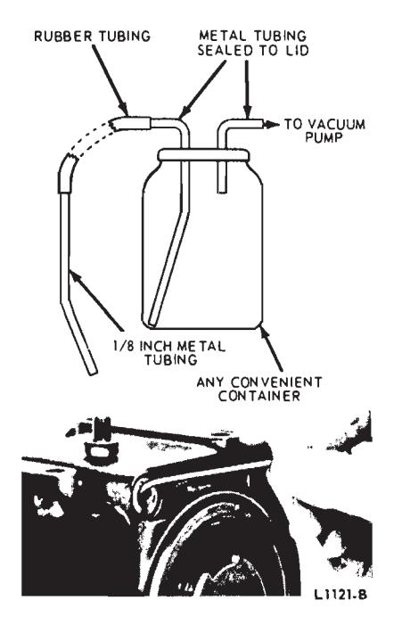
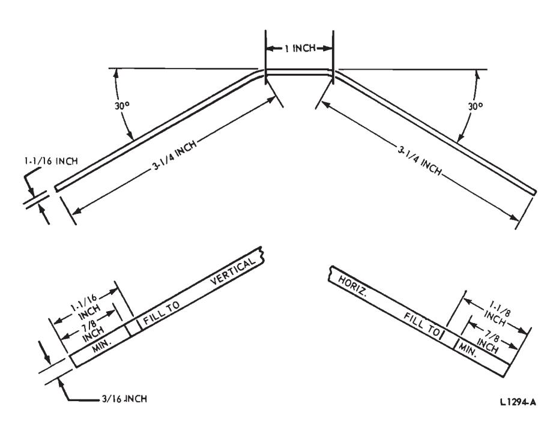
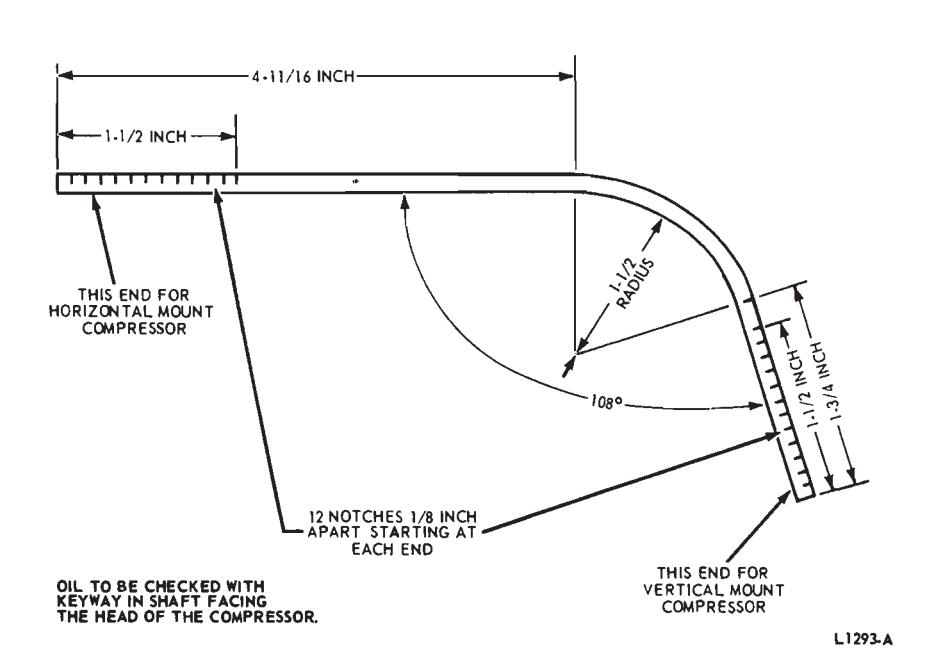
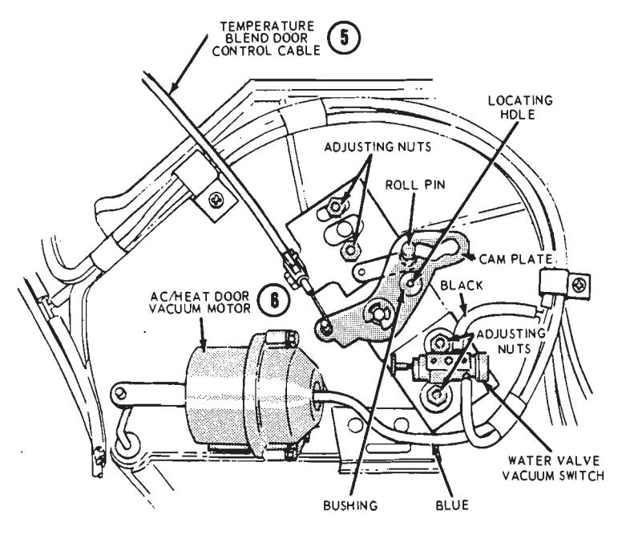

Air Conditioning Systems · 34-04-03a
Discharging the System
Discharge the refrigerant from the system before replacing any part of the system, except the compressor.
To discharge the system, connect the manifold gauge set to the system. Do not connect the manifold center connection hoses to the Refrigerant-12 tank, or vacuum pump. Place the open end of these hoses in a garage exhaust outlet. Set both manifold gauge valves at the maximum counterclockwise or open position. Open both service valves a slight amount (Figs. 22 and 23) and allow the refrigerant to discharge slowly from the system.
Do not allow the refrigerant to rush out, as the oil in the compressor will be forced out along with it.
Evacuating the System
Attach the manifold gauge set, a tank of Refrigerant-12 and a vacuum pump to the system. ‘Make certain that the Refrigerant-12 tank valve is tightly closed. Set both service valves to the mid-position. Open both manifold valves. Release any pressure in the system. Open the vacuum pump valve and run the pump until the low pressure gauge reads at least 25 inches, and as close to 30 inches of vacuum as possible. Continue vacuum pump operation for 20 to 30 minutes to boil any moisture out of the system. Close the pump valve. Turn off the pump.

Fig. 29 — Charging the Air Conditioning System
Making a Complete Charge
Check for leaks first (Section 2 in this part), release the pressure, then evacuate the system. Leave both service valves at the mid-position (Fig. 29) and the vacuum pump valve closed. Leave the low pressure manifold gauge valve at the maximum counterclockwise or open position. Set the high pressure manifold gauge valve at the maximum clockwise or closed position. Set all controls to the maximum cold position.
Open the Refrigerant-12 tank valve, Run the engine at 1500 rpm. Charge the system until the weight of refrigerant is to specification.
It may be necessary to place the Refrigerant-12 tank in a container of hot water at about 150 degrees F. to force the gas from the tank during charging.
Never heat the refrigerant-12 tank with a torch. A dangerous explosion may result.
During the charging, the high pressure may build up to an excessive value. This can be caused by an overcharge of refrigerant, or an overheated engine, in combination with high surrounding temperatures. Never allow the high pressure to exceed 240 pounds while charging. Stop the engine, determine the cause, and correct it.
After the proper charge has been made, close the Refrigerant-12 tank valve, and check the system pressures for proper operation. Set both service valves at the maximum counterclockwise position. Remove the gauge set, and cap the service valve gauge ports and valve stems.
Charging From Small Containers
Refrigerant-12 is available in 15 oz. cans. A scale is not necessary if these small containers are used instead of a tank.
Attach the hose that would normally go to the large tank to the special valve that is provided for the small cans. Close the valve (maximum clockwise position) and follow the procedure for leak testing, evacuating and charging the system as previously given.
For charging, attach a 15 oz. can of Refrigerant-12 to the special valve, and open the valve. Keep the can in an upright position. When the can is empty (no frost showing), close the valve, remove the empty can, attach a new one, and open the valve again.
Allow only the specified amount of refrigerant to be pumped into the system. The front line on the can will indicate what portion of the refrigerant in the can has entered the system. Then close the valve at the can. The system will then have been charged with the correct weight in pounds of refrigerant.
Check the system pressures, set both service valves at the maximum counterclockwise position. Remove the gauge set, and cap the service valve gauge ports and valve stems.
Compressor Oil Level Check
Under normal conditions, when the air conditioning system is operating satisfactorily, the compressor oil level need not be checked. There is no place for the oil to go except inside the sealed system. When the car is first started, some of the oil will be pumped into the rest of the system. After several minutes of operation, most of the oil is returned to the compressor crankcase.
Check the compressor oil level only if any portion of the refrigerant sys-

Fig. 32 — Tecumseh Compressor Oil Level Dipstick


Fig. 31 — York Compressor Oil Level Dipstick
tem is being replaced, or if there was a leak in the system and the refrigerant is being replaced.
Check the oil after the system has been charged and has been operating at idle speed for 10 minutes in 60 degrees F. surrounding air temperature or above. Turn off the engine, and isolate the compressor (see the following procedure). Do not front seat the suction service valve, and pump the refrigerant from the compressor, as a portion of the oil will also be pumped out of the compressor. Remove the oil filler plug from the compressor; insert a flattened 1/8-inch diameter rod (Fig. 30) in the oil filler hole until it bottoms. The dipstick must be wiped completely clean before insertion. The rod should
show at least the minimum amount of oil as shown in Figs. 31 and 32. It may be necessary to rotate the compressor crankshaft slightly by hand so that the dipstick will clear the crankshaft. If additional oil is needed in the compressor, add Sun Oil Suniso 5G, or Texaco Capella E refrigerant compressor oil or Suniso 3G or Capella C. Do not use engine oil, transmission or other non-refrigerant oils as they contain ingrediants which are not compatible with the Refrigerant 12. Do not use any type of additive.
If more than the maximum amount of oil is indicated, as might happen if a new compressor is installed and oil already in the system is pumped back to the compressor, draw out all of the oil using a trap similar to that shown in Fig. 30, or remove the compressor from the vehicle and pour the oil out of the crankcase. Add approximately 4 ounces of oil to the crankcase and operate the system, as before, for an additional 10 minutes. Recheck the oil level.
Replace the oil filler plug, evacuate and connect the compressor back int the system. Operate the system for an additional five minutes, then recheck the oil level as above. Two checks are necessary as one check will not return all the oil to the compressor if there is too much oil in the system.
Replace the oil filler plug, then evacuate and connect the compressor back into the system. Be sure to check the compressor filler opening for leaks.

Fig. 33 — Temperature Blend Door (5) Control Cable Bracket Assembly—Falcon, Fairlane, and Montego
When checking the oil level on a compressor which has the oil check hole on the side of the crankcase and the compressor is mounted horizontally, the dipstick must be angled so that the stick bottoms on the side of the crankcase and not the boss for the oil check hole on the downward side of the compressor (Fig. 30).
Isolating the Compressor
This procedure is used when checking the compressor oil level and when it is desired to replace the compressor without losing the refrigerant charge.
To isolate the compressor from the system, turn both the high and the low pressure service valves to the extreme clockwise (front-seat) position. Loosen the cap on the high pressure service valve gauge port, and allow the gas to escape until the compressor is relieved of refrigerant pressure.
Loosen the cap a small amount only, and do not remove it until the pressure is completely relieved.
To connect the compressor back into the system, evacuate the compressor with a vacuum pump at both service valve gauge ports, close the vacuum pump valve, turn both service valves to the maximum counterclockwise (back-seat) position, and cap the high pressure service valve gauge port and service valve stems.
Vacuum Motor Adjustment.
The vacuum motors are adjustable for proper air door operation.
The single acting actuators are adjusted so that the vacuum motor return springs are preloaded for about 1/8 inch travel of the connecting link with no vacuum applied. Perform the adjustment as follows:
- Loosen the vacuum motor attaching screws or nuts.
- Move the vacuum motor until the preload indicator is flush with the motor body. (The air door must be in its normal position with no vacuum applied).
- Tighten the bracket attaching screws or nuts and check the operation of the door.
Temperature Blend Door (5) Control Cable Adjustment—Falcon, Fairlane and Montego
Cam Plate and Mounting Bracket
-
Remove the heater airconditioner from the vehicle (Section 6)
-
Remove the control cable from the mounting bracket. 3. Loosen the two mounting brack- et adjusting nuts (Fig. 33).
-
Insert a 1/8-inch pin in the locating hole in the cam plate (Fig. 33) and down into the hole in the mounting plate bushing.
-
Rotate the cam plate and mounting bracket clockwise with the 1/8-inch pin in place, until the temperature blend door (5) touches the evaporator wall firmly. Then, tighten the two mounting bracket adjusting nuts.
Water Valve Vacuum Switch Adjustment
- Loosen the water valve vacuum switch adjusting nuts (Fig. 33).
- Rotate the cam plate to the maximum counterclockwise position.
- Position the switch so the plunger is depressed 1/16 to 3/32-inch by the cam plate. Then, tighten the adjusting nuts.
- Install the heater air-conditioner in the vehicle.
- Adjust the temperature blend door (5) cable turnbuckle with the temperature control in the minimum heat position. Allow approximately 1/8 inch bounce back on the lever from the end of the slot.